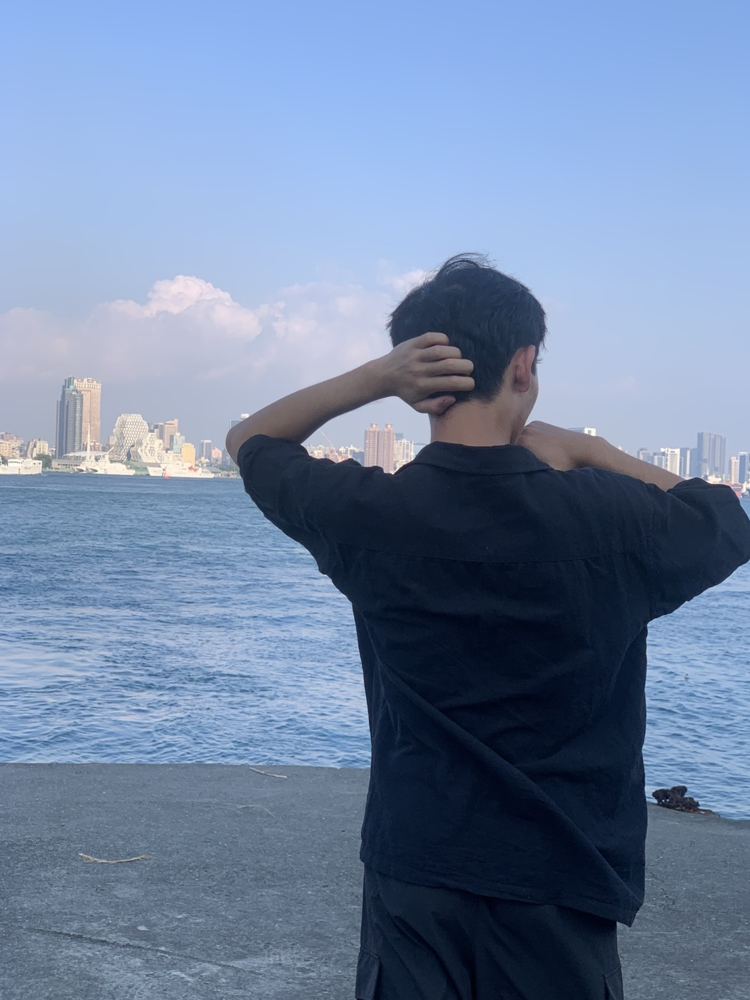
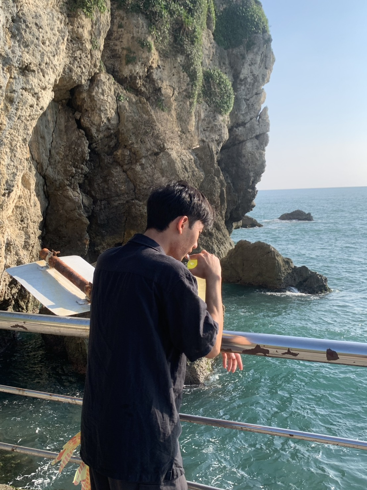
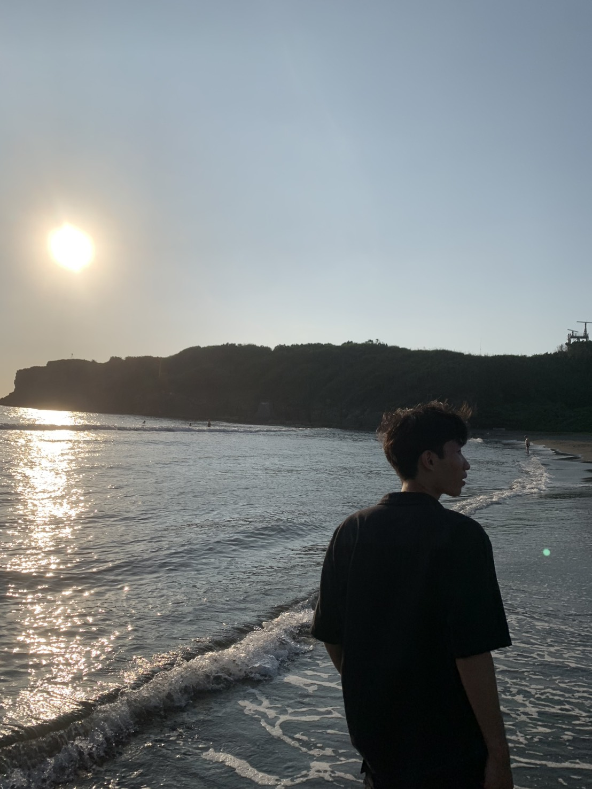
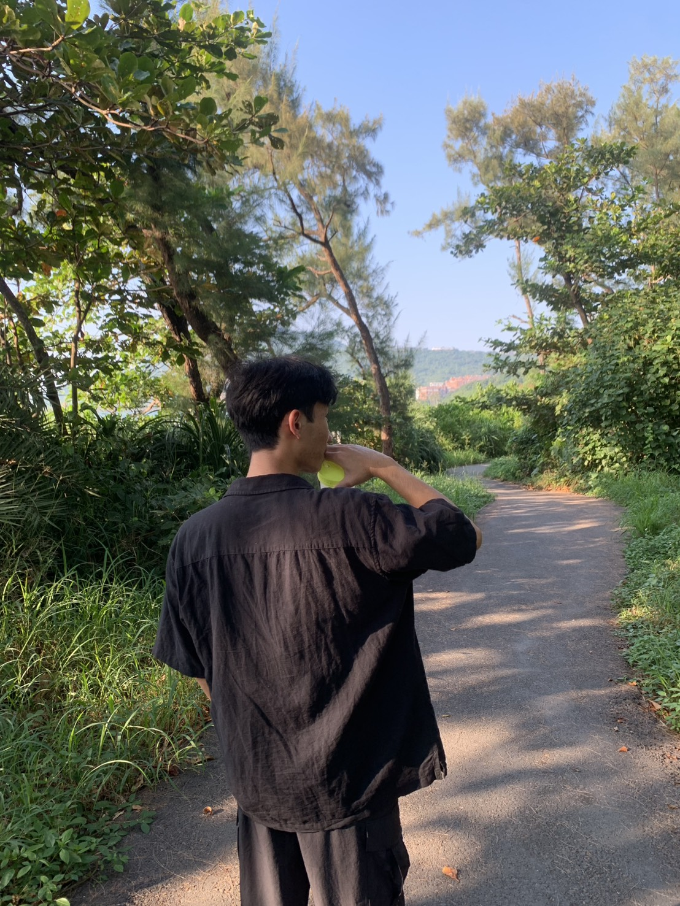

冒文進 (Mào Văn Tiến)
學號: 114011145
來自越南的留學生，目前就讀台中的亞洲大學 (Asia University)
興趣與愛好
- 跳舞
- 畫畫
- 爬山
- 看海
關於我
我是一個充滿熱情與好奇心的人，喜歡透過藝術和運動來探索世界和表達自我。在異國求學雖然充滿挑戰，但也讓我學會獨立、適應新環境和欣賞不同文化。
希望未來能將所學應用於實踐，並持續精進自己的專業技能。我樂於接受新事物，相信積極的態度能帶來無限的可能。
生活點滴




這是我的部分生活照片。